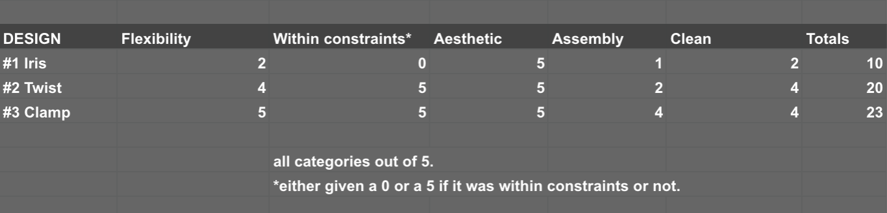

Inquiring and Analyzing
What problems/issues does the existing product have?
The existing product is the new espresso machine at my place of work, the Mastrena ii. While certainly an upgrade in almost every way, the handle that pours out espresso is no longer mobile. The closer the espresso spout is to the desired cup, the more still the shot, which produces a beautiful crema and heart of the espresso. However, this immobile and high up espresso spout means that all size of cup, especially short ones, get very bubbly, agitated espresso shots, often flat. This means that they are not up to company standard, taste bad, and produce bad foam and latte art.
What primary sources did you contact, and what did they tell you that can help with this project?
My Primary source was Joey, a fourth-year engineering student who is very familiar with the problem i am trying to solve. He emphasizes how crucial it is to know your tolerances; what cups you are working with and how specific it has to be. Consider all circumstances your device may be used in and try to make it as compatible as possible. Also think about the mechanics it may have, and in such a messy environment, drainage and cleaning is important.
What secondary sources did you find, and what information did this give you that can help with this project?
Lots of sources such as this one will tell you about the importance of the crema in terms of the quality of the beans you use to make espresso. Ideally, a medium- to light-roast, freshly roasted coffee will produced the fullest crema. Crema is considered the signature of a good espresso shot. Even if your beans and machine meet quality standard, the look and presence of the crema is what makes or breaks a good looking shot, and the drink that follows.
In my research, tilting the cup slightly so that the single stream of espresso falls on an angle, this is the ideal method to preserving the flavor and body of the shot.
What existing solutions (enhancements) did you find? What aspects of these designs will you use in your design?
Currently, it seems there are no solutions to this problem on the Mastrena ii. While for me, a latte art nerd, the foam is a big issue, its not a top priority for other baristas. It is a privilege that I have the time and resources to dedicate to this project.
Developing Ideas
How will you know that you created a successful design (what are your criteria for success)?
I know that I will have a successful design when it fits these criteria to the best of its ability:
- The design is able to support a wide range of cup sizes, hot and cold cups, personal cups, etc. This is mostly theoretical guess and estimation in terms of ranking designs.
- The design fits neatly within the constraints. This is completely measurable by drawing a 2” x 2” x 2” box around the design and making sure it is completely inside.
- The design is aesthetically pleasing without compromising function. Mechanisms must work well and be visually appealing, mostly theoretical.
- The mechanisms are easy to assemble and will stay together. Measurable by count of parts,
- The entire design is easy to clean/cover with heat tape where applicable
Share 3 sketches of your initial design ideas.
Share a decision matrix that helped you choose your final design.
How did you rank each idea on the decision matrix?
With this decision matrix, I took care to reason out point deductions for each idea.
My first sketch, Iris, only really had aesthetic going for it. Other than that, the mechanism would take hours to assemble (many small parts), be difficult to clean, and not even have a chance of working with personal cups, mugs, or cold cups. It also definitely wouldn’t fit within the constraints.
My second idea, Twist (named after the twist-latch mechanism), has a form with an angled-cylinder cut-out in it, allowing for lots of flexibility in the types of cups that can be tilted. However, the assembly was the difficult part, I wasn’t sure if I would be able to 3D print a long-lasting, twisting latch mechanism. It also wasn’t flexible on where in the grills of the machine it could be placed, since it would have a fixed width. This caused a 3-point assembly dock, and 1 point on flexibility.
I liked the idea of the cylinder cut-out form for the cups, so I kept that consistent in what became my final design, called Clamp (do you see the pattern here?). Funnily enough, Clamps’ main selling point is that it uses springs to stay in place. This allowed for the flexibility of attachment, which earned it 5 points. Because the assembly is so easy as well, this means that it is easy to clean.
Share a sketch of your finalized design plan (with dimensions).
Creating the Solution
What was your plan for completing this task in the required time?
My plan for completing this in required time was to have my house fully lazered out before we went on christmas break. Unfortunately, I continuously forgot to bring cardboard (and was also unaware of any cardboard storage downstairs). Therefore, the draft cut was not done until Monday we got back from break.
Modifications on a Timeline
In my initial "final design", I assumed the engraving process of the lazer cutter would cut a little deeps, or at least wider, than it did. For each wall, the engraving was supposed to allow it to fold inand create the corners of the walls, This did not happen and hindered the design. I had to gentely cut along every single engraved line just to make it move at all. I had to, essentially, completely redesign my house for it to reach my aesthetic and practicality standards.
I was trying to not use any glue in this project, but since the engraving was such an epic failure, I caved.


Video not of my own project.
With this, I finally had a working, practical, and aesthetically appealing design for this house. An Ant-sized cardboard house.
Share an assembly video for the final product.


Please Open Image in New Tab to zoom in further and explore the details of these photographs. Of my Ant House. My Tiny Boy.

A quick look into the fusion assembly process.
Evaluating
How did you test your solution?
As mentioned in the previous section, my initial design was faulty because of a miscommunication on how the printer does engravings. While I would like to believe that my initial design would have worked like a charm, I can never be certain.
The best that I can do is say that my inital design was, indeed, flat, but faulty, and would be very dissapointing if a kid recieved that as a present overseas :(.
What data did you collect?
In terms of data, it is mostly qualitative. The test cut was faulty, would not fold together, and had very obvious glue lines when I attempted to glue it together (no!).
How would you critically evaluate the performance of your final product?
Because of the very quick redesign that had to be done in order for my project to actually work, I have some retrospective critiques.
Firstly, I know that I could have asked beforehand what the engraving process was like, and maybe seen how it effects cardboard, before basing my entire design off of a theoretical mechanism.
Secondly, I would Based on your data, how well do you think your solution met the needs of the client/consumer? If you had 2 more days to work on the project, what would you change? How will your solution affect your client/target audience?